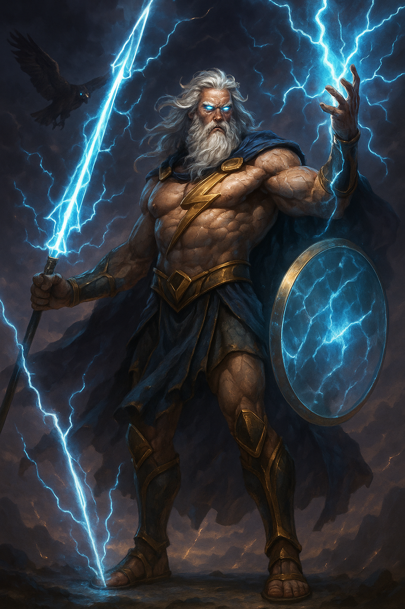

Зевс
Цар Олімпу, Володар Неба
Опис
Зевс — верховний бог грецького пантеону, що править з вершини гори Олімп. Він уособлює порядок, владу та справедливість, але його гнів страшний, як буря. Його зброя — блискавки, викувані циклопами. У грі Зевс є потужним лідером, здатним як підтримувати союзників, так і знищувати ворогів здалеку.
Сім'я
- Батьки: Кронос та Рея
- Брати/Сестри: Аїд, Посейдон, Гера
- Дружина: Гера
- Діти: Арес, Афіна, Аполлон, Артеміда, Гефест
Здібності
- Удар блискавки: Завдає величезної шкоди одній цілі.
- Грозова хмара: Створює на полі бою зону, яка періодично б'є ворогів блискавками.
- Воля Олімпу: Тимчасово підвищує атаку та захист усіх союзних військ.
- Божественний суд: Після короткої затримки завдає шкоди усім ворогам на карті.